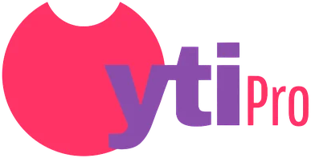
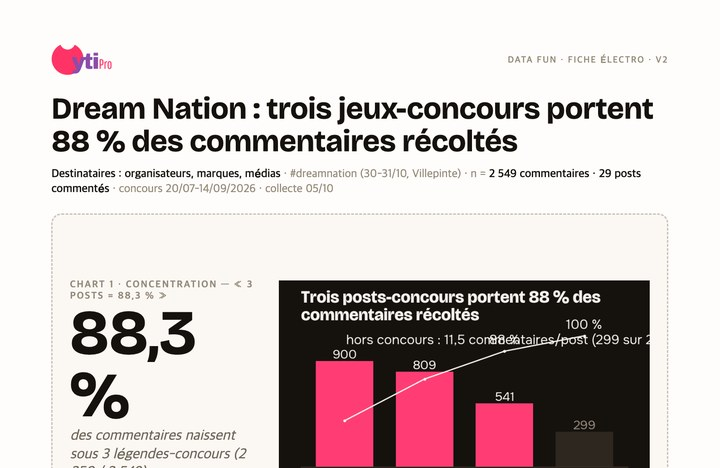
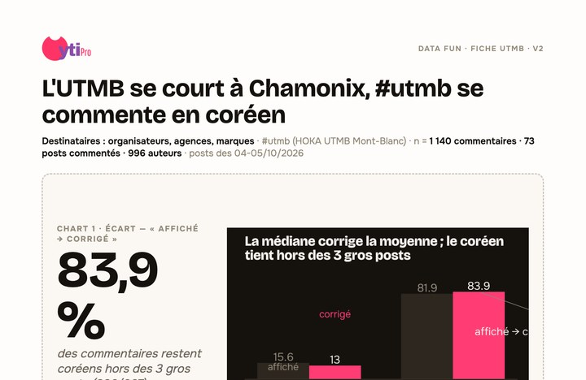
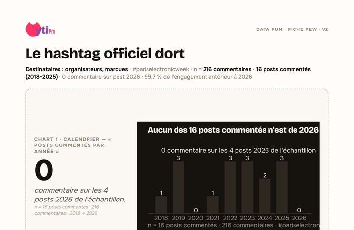
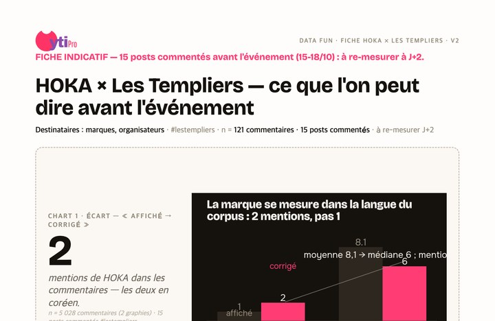

Études datées et sourcées, guides de méthode, rapports complets. La donnée d'abord — le rendez-vous, seulement s'il sert.
Ce que 600 posts et 4 026 commentaires disent d'un événement — une fiche par sujet, méthode et limites comprises.




La méthode multi-plateformes, découpée en trois parcours — chaque guide est daté et sourcé.
Les études détaillées, plateforme par plateforme. Les seuls documents réservés aux abonnés de la veille.
Yalla Surf & Kite, Gen Z Running Gulf, Sport Eyewear — les versions détaillées, avec méthodo et annexes. Le Marathon de Paris 2026 reste, lui, libre de téléchargement.
Chaque semaine, ce qui compte vraiment dans l'IA : modèles, investissements, régulation, outils — décryptés, sans fluff. Plus un signal mesuré issu de nos études Data Fun.
Parler à un analyste — première lecture de vos enjeux en 15 min, rapport sous 3 jours.
Parler à un analyste →